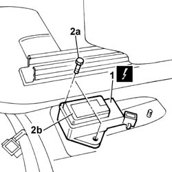

3330E50 l/h or r/h rigid pipe (one) from master cylinder (pump) to front brakes - arrange
- Path
- Procedures > 33 BRAKING SYSTEM > 3330 HYDRAULIC BRAKING SYSTEM > 3330E hydraulic brake system pipes > 3330E50 l/h or r/h rigid pipe (one) from master cylinder (pump) to front brakes - arrange
- Kind
- repair procedure (removal / refitting; the operation number is the code)
- Applies to
- all engines; all production periods
- Interactive page
- https://sloeber94.github.io/elrnDB-fPnd/en/#/2752747
Applies to: all engines; all production periods; only with equipment: Smart gearbox
 Removing
Removing
 Refitting
RefittingDisconnect the battery negative terminal.
1. Disconnect the electrical connection for the yaw sensor.
 | Name | Connector |
|---|---|---|
1 | Slewing sensor (VDC) | K74 |
2. Undo the fixing bolts (2a) and remove the sensor (2b).

Applies to: all engines; all production periods; only with equipment: Smart gearbox
Refitting
RemovingFit the yaw sensor in its seat and secure using bolts.
Connect the electrical connection for the yaw sensor.
| Name | Connector |
|---|---|---|
- | Slewing sensor (VDC) | K74 |
Connect the battery negative terminal.